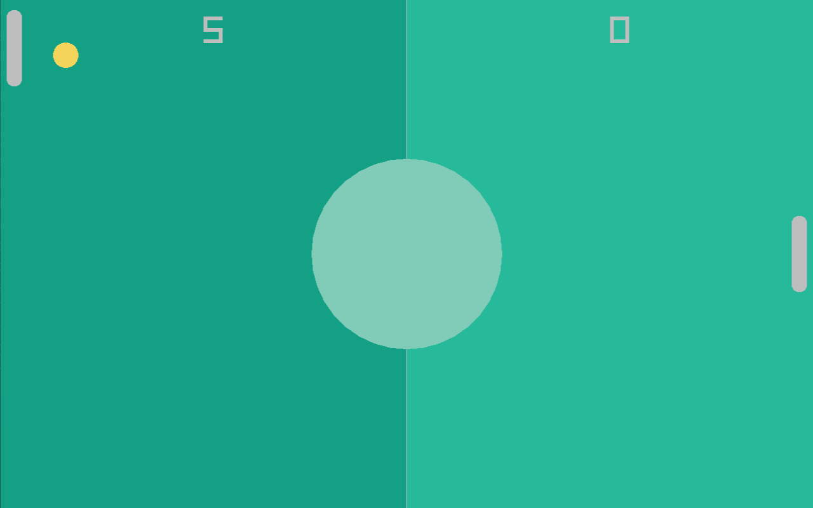

Game Example
FIP on Windows is broken
Since FIP currently is broken in Windows (for more information look here this game example would be pretty hard to implement on Windows.
For this reason, it has not been tested in any way on Windows, I am sorry for that. It will be tested and this warning will be removed once FIP on Windows fully works again.
Welcome to the last chapter of the beginners guide! You have learnt a lot of Flint concepts in small examples over the coarse of this guide so far. Now we will move on to bring all those features together to create a small game using Flint. The small game we will create is Pong.
This whole chapter is not mandatory for you to learn Flint, as no new concepts will be introduced. This chapters only purpose is to apply all concepts learnt up until this point in a meaningful way. Applying the concepts in a practical example will help you to consolidate them. So, even if you feel proficient in Flint, it is still recommended to follow this game example chapter before moving on to the intermediates guide.

We will create the game using raylib, a C library which makes creating games very easy. This guide goes through the entire process of creating such a small game step by step. You don't need any prior knowledge in raylib or game developement in general, everything you need will be explained as you go.
The finished game will be around 350 lines of code, so it's still a rather small program.